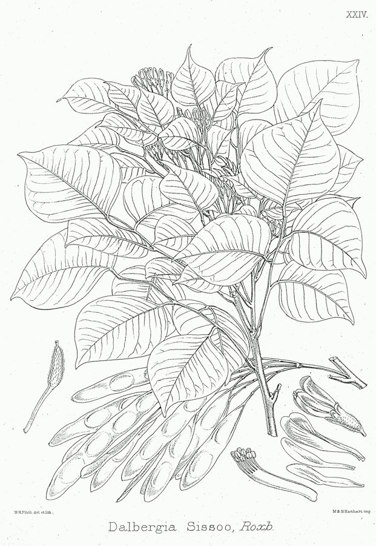

शीशमShisham
Dalbergia sissoo · Fabaceae · FLR-0032

- Scientific name
- Dalbergia sissoo Roxb. ex DC.
- Family
- Fabaceae
- Hindi
- शीशम
- Status here
- native
- IUCN
- LC
When to look कब देखें
Present all year.
शीशम / Shisham
Dalbergia sissoo Roxb. ex DC. — Fabaceae
शीशम — उत्तरी भारत के मैदानी भागों का एक अत्यंत लोकप्रिय और विशाल पतझड़ी पेड़, जो अपनी बेहद मजबूत और टिकाऊ लकड़ी के लिए प्रसिद्ध है। इसके पत्ते संयुक्त होते हैं, जिनमें 3 से 5 गोल-गोल पर्णक एक टेढ़े-मेढ़े डंठल पर एक के बाद एक (एकांतर) लगे होते हैं। वसंत में इसमें छोटे खुशबूदार फूल और सर्दियों में भूरे रंग की चपटी, कागज़ जैसी फली आती हैं। यह पेड़ हवा से नाइट्रोजन लेकर अपनी जड़ों की ग्रंथियों में जमा करता है, जिससे मिट्टी उपजाऊ बनती है, और इसकी गहरी जड़ें नदियों एवं नहरों के किनारों को कटने से बचाती हैं।
Quick Identification त्वरित पहचान
| Feature | Description |
|---|---|
| Leaves | Alternate, pinnate compound (10–15 cm long); with 3–5 alternating (not opposite) roundish leaves ending in a sharp, sudden point |
| Bark | Thick, dark grey to brown, rough, peeling off in long vertical strips on older trees |
| Pods | Light green when young, ripening to pale straw-brown; thin, flat, and papery (4–8 cm long) containing 1–4 flat seeds |
| Flowers | Small, pea-like, creamy-white to pale yellow (5–8 mm long), arranged in short branched clusters |
| Trunk | Often crooked or irregular in older wild trees; wood contains dark-brown durable heartwood |
Field tip: Look for a large tree with compound leaves where the roundish leaflets alternate in a zig-zag line on the leaf stalk, each leaflet ending in a prominent drip-tip. In winter, the tree can be identified by the thousands of dry, light-brown papery pods hanging from the bare branches.
Morphology आकारिकी
Biometrics (typical measurements in the Gangetic plain):
| Feature | Measurement |
|---|---|
| Plant height | 10–25 m |
| Leaflet length | 3–8 cm |
| Leaflet width | 3–7 cm |
| Flower diameter | 5–8 mm |
| Pod dimensions | 4–8 cm |
Habit: A medium to large deciduous tree, growing up to 10–25 metres tall, with a light crown and an irregular, often crooked trunk.
Leaves: Alternate, compound pinnate, 10–15 cm long, with a characteristic zig-zag central stalk (rachis). Leaflets are 3 to 5, arranged alternately, broadly ovate to circular (suborbicular), 3–8 cm long and wide. The tip of each leaflet is abruptly tapered into a sharp point (acuminate).
Flowers: Small, pea-like (papilionaceous), 5–8 mm long, greenish-white to pale yellow, borne in short, branched, hairy clusters in the leaf axils. They have a sweet fragrance.
Pods: Thin, flat, papery, indehiscent pods, 4–8 cm long and 1–1.5 cm wide. They turn from light green to a pale straw-brown as they mature, containing 1 to 4 flat, kidney-shaped seeds.
Ecological Role पारिस्थितिक भूमिका
Nitrogen fixation. Like other members of the legume family, Dalbergia sissoo hosts symbiotic Rhizobium bacteria in its root nodules. These bacteria capture atmospheric nitrogen, enriching the surrounding soil and benefiting adjacent agricultural crops.
Erosion control. The extensive, deep lateral root system binds sandy alluvial soils. It is heavily planted along the banks of rivers, irrigation canals, and sand dunes in eastern UP to prevent soil erosion during the monsoon floods.
Nesting habitat. The open canopy and strong branches provide safe nesting platforms for large birds like House Crows (Corvus splendens), Black Kites (Milvus migrans, BRD-0011), and various doves.
Life Cycle / Phenology जीवन चक्र
- Leaf fall: Deciduous. Drops its leaves in winter (January–February), becoming bare for a short period.
- Flushing and flowering: Bright green new leaves flush rapidly in March, immediately followed by masses of sweet-scented tiny flowers.
- Pod development: Green pods develop by May and mature to brown by November–December. They persist on the tree through the winter before being dispersed by wind and water.
Host Plants or Prey आहार
Associated organisms:
- Leaf-miner beetles and leaf-rolling caterpillars feed on the young leaves in spring.
- Nitrogen-fixing Rhizobium bacteria inhabit the root nodules.
Predators / Natural Enemies शत्रु
- Sissoo Wilt Disease — A soil-borne fungus (Fusarium solani) can cause rapid drying and death of trees, especially in waterlogged soils.
- Termites — Attack older, weakened trees, though the heartwood remains resistant.
- Defoliator Caterpillars — Can completely strip the leaves of young plantations in spring.
Agricultural / Human Relevance कृषि प्रासंगिकता
High-quality timber. Shisham is the premier hardwood timber tree of northern India. The heartwood is dark brown, extremely hard, heavy, and naturally resistant to termites. It is highly valued for manufacturing high-end furniture, doors, window frames, and decorative wood carvings.
Agricultural implements. Due to its elasticity and strength, it is used locally to make plowshares, cartwheels, and tool handles.
Fodder. In spring, when grass is scarce, farmers harvest the tender young leaves as nutritious fodder for cattle, buffaloes, and goats.
Fuelwood. The wood has a high calorific value, serving as a primary source of high-quality firewood and charcoal in rural areas.
Expected Locally स्थानीय रूप से अपेक्षित
Not a field record. Written from published accounts for eastern Uttar Pradesh. No confirmed local sighting yet — if you have seen it, that is what the atlas needs.
अभी तक स्थानीय पुष्टि नहीं। यह विवरण प्रकाशित स्रोतों से है, किसी अवलोकन से नहीं।
A dominant tree species along roadsides and canal bunds throughout Basti district. Farmers commonly plant Shisham on the borders of their agricultural fields as a long-term investment for timber. During early spring (March–April), the air near Shisham groves is filled with the sweet scent of its tiny flowers, and the fresh bright-green foliage is a characteristic marker of the season.
Distribution वितरण
Global range: Native to the foothills of the Himalayas, stretching from eastern Pakistan through India, Nepal, Bhutan, to Bangladesh; introduced to parts of Africa and the Middle East.
In India: Widespread in plains and river valleys of northern India, especially in Punjab, Haryana, Uttar Pradesh, Bihar, and West Bengal, ascending up to 900 metres in the Himalayas.
In Uttar Pradesh: Ubiquitous across all districts, extensively planted along roadsides and canal margins by the State Forest Department.
In Basti district / eastern UP: Highly common, found in every rural block on agricultural borders and roadside avenues.
Range notes: No significant range changes documented.
Research Questions शोध प्रश्न
Anyone can investigate these | कोई भी इन प्रश्नों की जाँच कर सकता है
- How does the growth rate of crops planted adjacent to Shisham trees compare to those near Eucalyptus trees? / नीलगिरी (Eucalyptus) के पास लगी फसलों की तुलना में शीशम के बगल में लगी फसलों के विकास की दर कैसी होती है? — Compare crop heights at different distances from both trees.
- What percentage of Shisham trees along local canals in Basti show signs of Wilt Disease? / बस्ती में स्थानीय नहरों के किनारे लगे शीशम के कितने प्रतिशत पेड़ों में विल्ट बीमारी (सूखने) के लक्षण दिखते हैं? — Survey 50 canal-side trees and document dry branches.
- Which bird species choose Shisham trees for nesting during the summer breeding season? — Document nests, heights, and bird species in a local patch.
- How long does it take for Shisham leaves to decompose in soil compared to Neem leaves? — Place leaf packs in garden soil and measure weight loss monthly.
- How does the presence of Shisham roots affect bank stability along earthen irrigation channels? — Compare bank erosion rates in channels with and without Shisham trees.
Similar Species मिलती-जुलती प्रजातियाँ
| Species | How to tell apart | हिंदी |
|---|---|---|
| Indian Rosewood (Dalbergia latifolia) | Leaflets are larger, opposite (not alternate), and darker; tree grows primarily in southern India | विलायती शीशम — विपरीत बड़े पत्ते |
| Black Siris (Albizia lebbeck) | Bipinnate compound leaves with many small leaflets; fruit is a large, thick straw-colored pod | सिरिस — चौड़ी फलियाँ |
| Neem (Azadirachta indica) | Leaflets have sharply toothed margins and asymmetric bases; bark is rougher and deeply cracked | नीम — आरी-नुमा पत्ते, कड़वा स्वाद |
Field rule: Compound leaves with 3 to 5 alternating, roundish leaflets ending in a sharp point, zig-zag leaf stalks, and thin papery pods identify Dalbergia sissoo.
Taxonomy & Classification वर्गीकरण
Original description. The species was first proposed by William Roxburgh in 1814 in Hortus Bengalensis (p. 53). The French botanist Augustin Pyramus de Candolle published the valid description in 1825 in Prodromus Systematis Naturalis Regni Vegetabilis (Vol. 2, p. 355). The type locality is India. The genus name Dalbergia honors the Swedish botanist Carl Gustav Dahlberg. The specific epithet sissoo is the latinized version of the local Hindi name.
Subspecies. Monotypic — no subspecies are currently recognised.
Family and order placement. Placed in the order Fabales, family Fabaceae (legume family), subfamily Faboideae (Papilionoideae), tribe Dalbergieae. Fabaceae is characterized by compound leaves, pea-like flowers, and seed pods.
Phylogenetic notes. Dalbergia is a species-rich pantropical genus. Molecular studies place Dalbergia sissoo in a clade of typical Asian dry-deciduous timber trees, closely related to Dalbergia latifolia.
IUCN status rationale. Listed as Least Concern (LC). The species has an extensive native and cultivated range, high population density, and is secure, though Wilt Disease poses localized plantation challenges.
Photo Gallery फोटो गैलरी
References संदर्भ
- Candolle, A.P. de (1825). Prodromus Systematis Naturalis Regni Vegetabilis. Vol. 2. Treuttel et Würtz, Paris, p. 355.
- Roxburgh, W. (1814). Hortus Bengalensis, or a Catalogue of the Plants Growing in the Honourable East India Company's Botanic Garden at Calcutta. Mission Press, Serampore, p. 53.
- Brandis, D. (1906). Indian Trees. Archibald Constable & Co., London.
- Troup, R.S. (1921). The Silviculture of Indian Trees. Vol. 1. Clarendon Press, Oxford.
- Botanical Survey of India — Flora of Uttar Pradesh.
- GBIF Occurrence Data — Dalbergia sissoo, Uttar Pradesh (2010–2025).
Source file: species/flora/trees/shisham.md